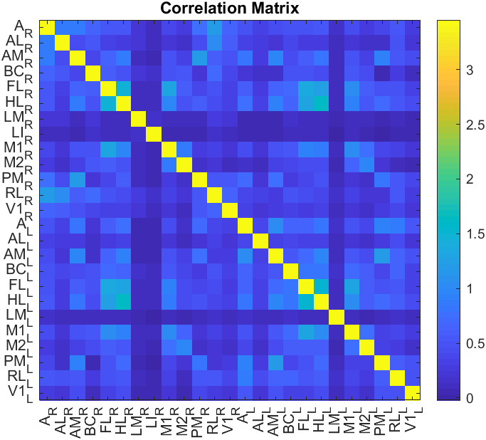

The Analysis functions of the toolbox give as output a .mat file instead of a .dat file as the othe functions do. This file is used in the Analysis tab of the umIToolbox app and are the output files from the Extract data from ROI and Generate correlation matrix utilities from the DataViewer app.
This section describes how the data is structured and gives an example on how to work with the extracted data.
The .mat file contains variables with data related to one or more observations (i.e. ROIs) and meta data.
Each element of the structure array contains the following fields:
Note Some of fields may be missing here depending on the type of data and analysis performed.
| Field | Description |
|---|---|
| Datatype | format of numerical data |
| FirstDim | letter of first dimension of imaging data (deprecated) |
| Freq | The recording sample rate in Hz |
| Stim | Vector with triggers from imaging data with events (deprecated) |
| datFile | Path or name of the .dat file used to create this .mat file |
| dataFile | Full path to the .matfile containing the recording's data |
| datSize | Size of the 1st and 2nd dimensions of data |
| datLength | Size of the 3rd+ dimension(s) of data |
| data | Cell array containing the data from each observation. The data is organized in the same order as the obsID field |
| dataHistory | Structure array with metadata about the pipeline steps used to create the file. This is used by the Pipeline Manager Tool to skip steps during a pipeline execution |
| dim_names | Cell array with dimension identifiers. Some examples: Observation, Event, Time, X and Y |
| label | Cell array containing labels (i.e. names) assigned to each column of the data from the data field |
| obsID | List of observation (i.e. ROI) names |
| tExposure | Illumination exposure time (in milliseconds). |
Here is an example on how to use the data extracted from umIT. In this case, we will build a correlation matrix with a .mat file created using the genCorrelationMatrix function.
% In this example, the data consists of vectors (1xN) values
% corresponding to the correlation values of a given observation (i.e. ROI)
% to all observations.
% Here, we will create a correlation matrix from this data
%% Load the extracted data:
s = load('corrMatrix_avg_vs_avg.mat');
%% Prepare the data for plotting
% Since the data of each observation ("O") is stored as a numeric vector
% (1 x O), we will concatenate the data to obtain a matrix with dimensions
% O x O:
data = vertcat(s.data{:});
%% Plot the correlation matrix
figure; imagesc(data); axis square;
obsNames = s.label; % Get the observation names from the "label" field.
% Add the observation names to the X and Y axis and rotate the ones in the X axis by 90 degrees:
set(gca, 'XTick', 1:length(s.label), 'XTickLabel', s.label,...
'XTickLabelRotation', 90, 'YTick', 1:length(s.label), 'YTickLabel', s.label)
colorbar; % Add a colorbar
title('Correlation Matrix') % Add a title
Here is the resulting image:
